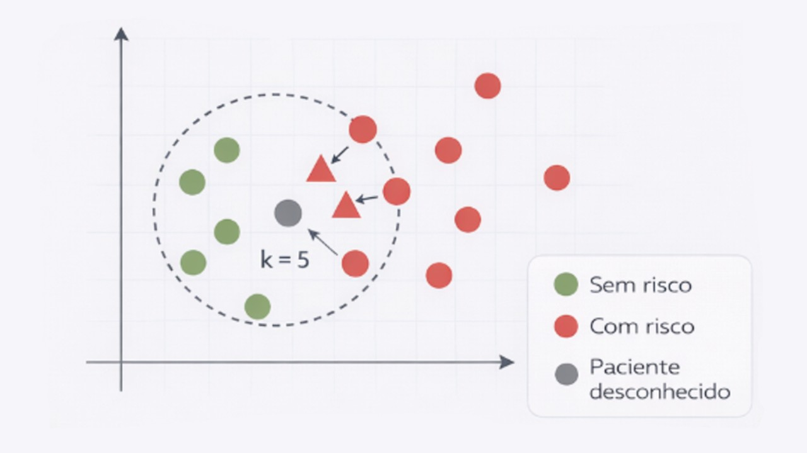
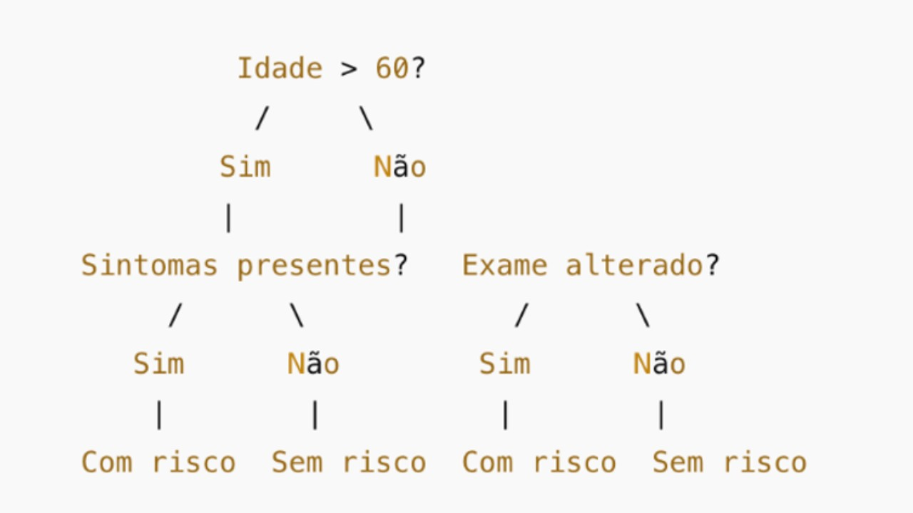
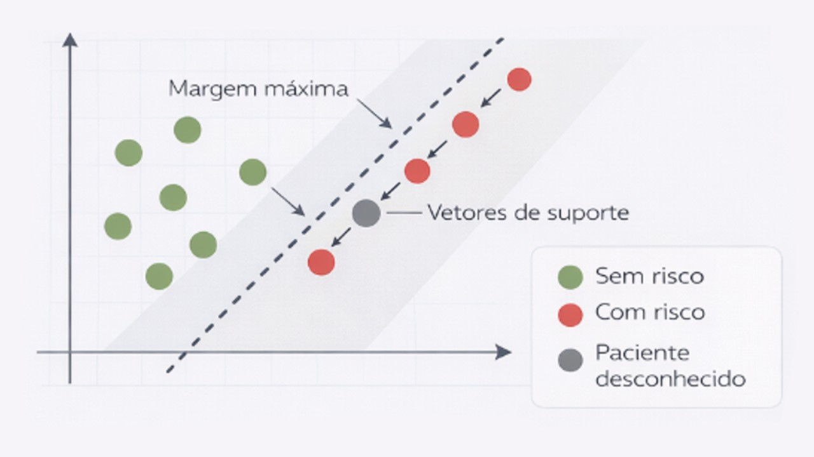

Módulo 3 | Aula 2
Aprendizado Supervisionado
Treinamento de modelos de classificação
Nessa etapa, o algoritmo de classificação é utilizado para treinar o modelo a partir do conjunto de treinamento. Existem diversos algoritmos para a tarefa de aprendizado supervisionado e entre eles estão: o algoritmo k-NN, o classificador Naive Bayes, a árvore de decisão e o algoritmo Support Vector Machine (SVM). Cada um desses algoritmos utiliza uma estratégia distinta para aprender padrões nos dados e tomar decisões de classificação, o que pode resultar em diferenças de desempenho, interpretabilidade e capacidade de generalização.
Faça você mesmo!
No script em R da aula 2, você poderá testar esses algoritmos na prática de forma opcional.
Algoritmo k-NN (K-Nearest Neighbors): é o algoritmo dos vizinhos mais próximos, que classifica os objetos com base na proximidade. Nesse contexto, cada objeto pode ser representado como um ponto definido por suas características. No k-NN, a proximidade entre objetos é medida pela distância entre esses pontos. Para isso, a métrica de distância euclidiana é comumente utilizada para calcular a proximidade entre os objetos. O parâmetro k define o número de vizinhos mais próximos que o algoritmo levará em consideração. Por exemplo, se k = 3, o algoritmo considerará os três vizinhos mais próximos para fazer a classificação. A fim de evitar empates, é recomendado evitar k = 2 ou valores pares.
Por exemplo, pacientes podem ser classificados como “com risco” ou “sem risco” para determinada condição com base em características como idade, pressão arterial e resultados de exames. No algoritmo k-NN, um novo paciente é comparado aos pacientes mais semelhantes do conjunto de treinamento. A classificação é atribuída com base na classe mais frequente entre os pacientes mais próximos.

Classificador Naive Bayes: é baseado em um método probabilístico, o teorema de Bayes, que considera as variáveis independentes umas das outras. Essa suposição de independência significa que o modelo considera que cada característica contribui de forma separada para a classificação, o que simplifica os cálculos e torna o algoritmo computacionalmente eficiente. O algoritmo calcula as probabilidades condicionais para cada classe (ou seja, cada possível categoria do rótulo a ser previsto) com base nas variáveis dos dados do conjunto de treinamento. Em outras palavras, o modelo utiliza a frequência com que determinadas características aparecem em cada classe para estimar a qual classe uma nova amostra tem maior probabilidade de pertencer.
Por exemplo, imagine o mesmo conjunto de dados de pacientes classificados como “com risco” ou “sem risco” para uma determinada condição. Com base no histórico dos dados, o Naive Bayes aprende a frequência de características como idade, presença de sintomas ou resultados laboratoriais em cada classe (risco ou sem risco). Para um novo paciente, o modelo estima a probabilidade de pertencimento a cada classe e realiza a classificação com base na maior probabilidade.
O Teorema de Bayes é uma regra da probabilidade que nos ensina a atualizar o quanto acreditamos em uma hipótese à medida que obtemos novas informações. Considere um conjunto de morangos classificados como “doces” ou “não doces”. A partir dos dados de treinamento, o modelo aprende com que frequência características como cor, tamanho e textura aparecem em cada classe. Quando um novo morango é avaliado, o Naive Bayes estima a probabilidade de ele ser doce ou não doce com base nessas características e o classifica na classe com maior probabilidade. Interessante, não é mesmo?
Separamos alguns materiais sobre esse tema para você se aprofundar:
- Assista o vídeo sobre o tema
- Leia o artigo em educacaopublica.cecierj.edu.br
Árvores de decisão: é um método baseado em busca que utiliza a estratégia de dividir um problema complexo em problemas mais simples. Em cada etapa da divisão, o algoritmo seleciona a variável que melhor separa os dados, criando regras sequenciais que conduzem à classificação final. As decisões são representadas em formato de árvore, contendo um nó raiz, nós internos, ramos e folhas. Assim, a classificação de uma nova amostra ocorre ao percorrer a árvore desde o nó raiz até uma folha, seguindo as regras definidas em cada nó. Cada nó representa uma variável, cujos ramos são rotulados com valores ou intervalos que apresentam o fluxo da decisão. As folhas, ou nós terminais, não se dividem, pois são representadas pela classe do conjunto de dados. Usando como base o mesmo exemplo mencionado acima, uma árvore de decisão pode ser utilizada para classificar pacientes como “com risco” ou “sem risco” para determinada condição. O modelo pode iniciar a decisão avaliando a idade do paciente, em seguida a presença de sintomas e, por fim, resultados de exames. Cada resposta conduz a um novo ramo da árvore até que se chegue a uma classificação final.

Algoritmo SVM (Support Vector Machine): esse algoritmo busca um hiperplano que melhor separa as classes em um espaço de variáveis. Para isso, existe uma margem máxima, que é a distância entre o hiperplano e os pontos de dados mais próximos de ambas as classes. Esses pontos de dados são os vetores de suporte, eles são críticos para definir a posição do hiperplano e influenciam diretamente a classificação final.
O algoritmo SVM busca separar pacientes “com risco” e “sem risco” traçando uma fronteira que melhor distingue esses dois grupos com base em suas características. Os pacientes mais próximos dessa fronteira são chamados de vetores de suporte e são fundamentais para definir a separação entre as classes, influenciando a classificação de novos pacientes.

A forma como o hiperplano é construído depende da complexidade da separação entre as classes, dando origem a diferentes tipos de SVM. Existem dois principais tipos de SVM: SVM Linear e SVM não Linear.
| Algoritmo | Como funciona | Principal vantagem | Principal desvantagem |
|---|---|---|---|
| k-NN | Classifica pela proximidade dos k vizinhos | Simples e intuitivo | Lento em grandes bases |
| Naive Bayes | Usa probabilidades baseadas no Teorema de Bayes | Rápido e eficiente | Assume independência entre variáveis |
| Árvore de Decisão | Cria regras sequenciais em formato de árvore | Fácil interpretação | Propensa a overfitting |
| SVM | Busca hiperplano que separa as classes | Eficaz em alta dimensão | Difícil interpretação |